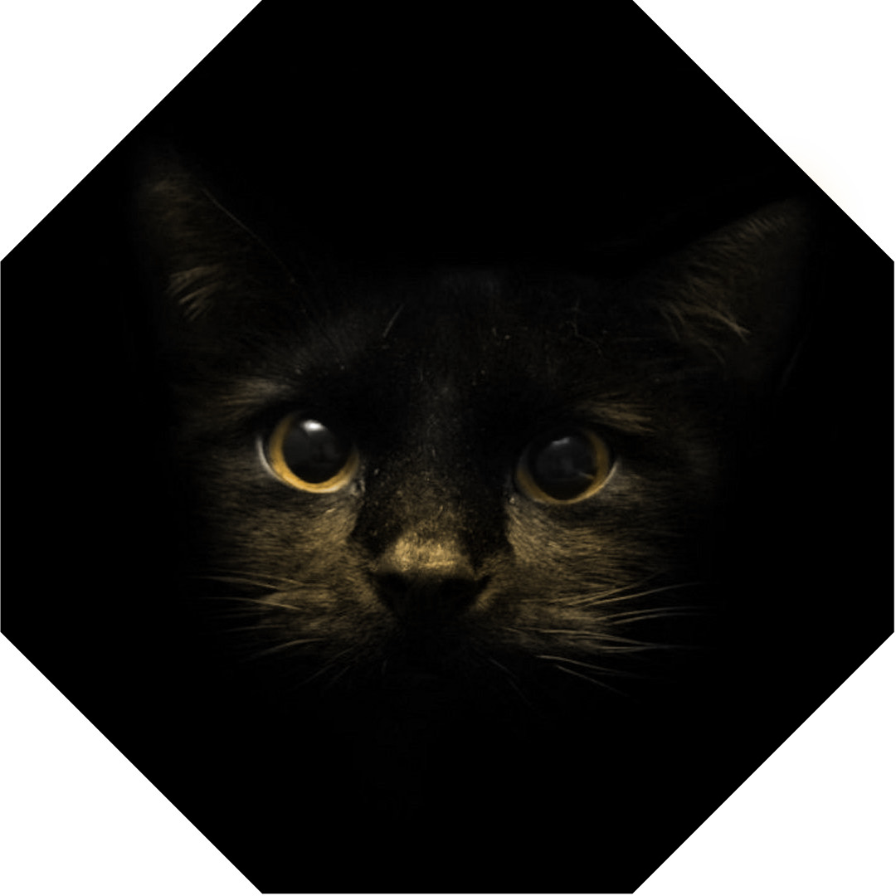
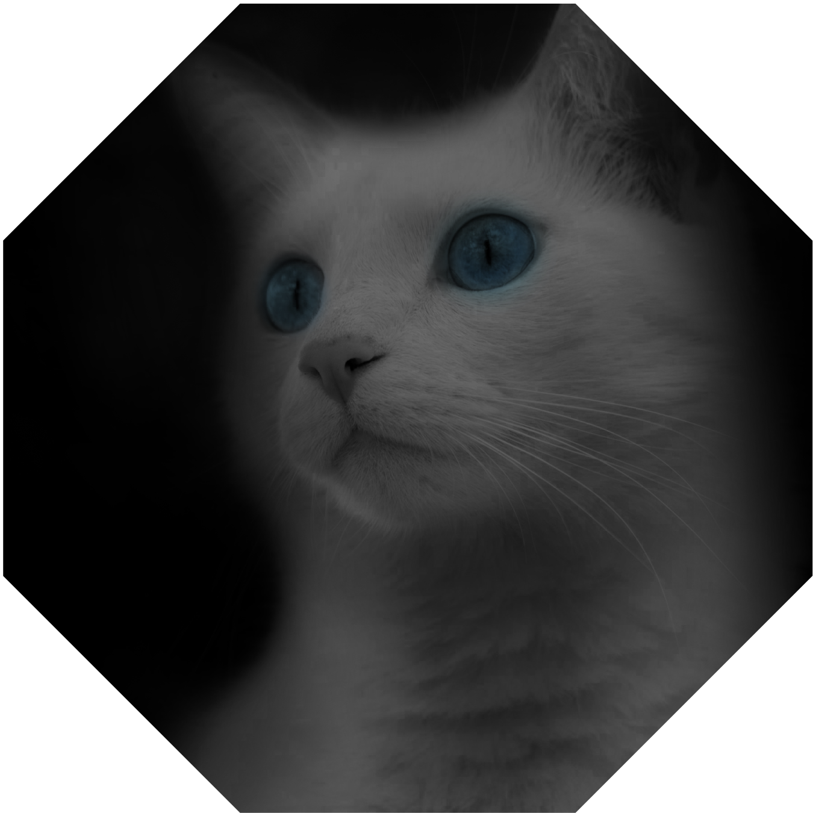
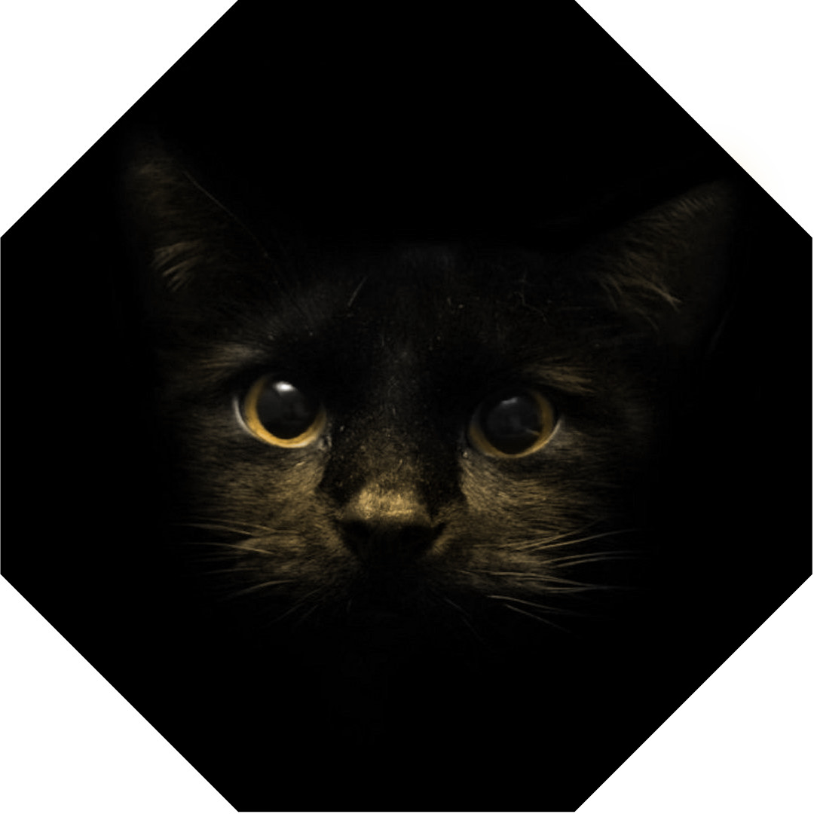
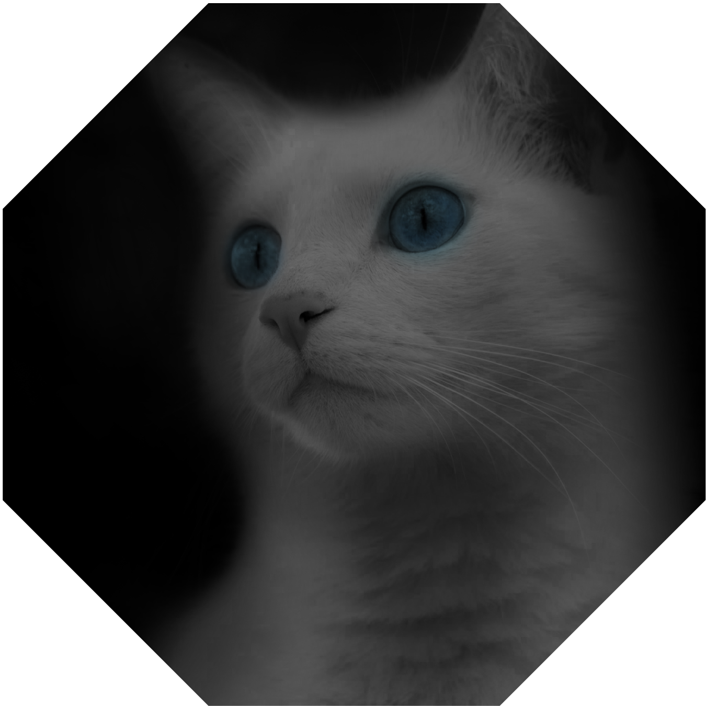

It is a rite of passage for any sufficiently advanced genetically modified animal: at some point scientists will insert a gene that makes you glow green. The latest addition to this ever-growing list – which includes fruit flies, mice, rabbits and pigs – is the domestic cat.
US researcher Eric Poeschla has produced three glowing GM cats by using a virus to carry a gene, called green fluorescent protein (GFP), into the eggs from which the animals eventually grew.
This method of genetic modification is simpler and more efficient than traditional cloning techniques, and results in fewer animals being needed in the process.
The GFP gene, which has its origins in jellyfish, expresses proteins that fluoresce when illuminated with certain frequencies of light. Poeschla, of the Mayo Clinic in Rochester, Minnesota, reported his results in the journal Nature Methods.
This function is regularly used by scientists to monitor the activity of individual genes or cells in a wide variety of animals. The development and refinement of the GFP technique earned its scientific pioneers the Nobel prize for chemistry in 2008.
In the case of the glowing cats, the scientists hope to use the GM animals in the study of HIV/Aids.
"Cats are susceptible to feline immunodeficiency virus [FIV], a close relative of HIV, the cause of Aids," said professors Helen Sang and Bruce Whitelaw of the Roslin Institute at the University of Edinburgh, where scientists cloned Dolly the sheep in 1996.
"The application of the new technology suggested in this paper is to develop the use of genetically-modified cats for the study of FIV, providing valuable information for the study of Aids.
"This is potentially valuable but the uses of genetically modified cats as models for human diseases are likely to be limited and only justified if other models – for example in more commonly used laboratory animals, like mice and rats – are not suitable."
Dr Robin Lovell-Badge, head of developmental genetics at the Medical Research Council's national institute for medical research, said: "Cats are one of the few animal species that are normally susceptible to such viruses, and indeed they are subject to a pandemic, with symptoms as devastating to cats as they are to humans.
"Understanding how to confer resistance is ... of equal importance to cat health and human health."
Deaf white cats are domestic cats with a pure white coat. Some white cats suffer from congenital deafness caused by a degeneration of the inner ear. This condition is associated with blue irises. In white cats with mixed-coloured eyes (odd-eyed cats), it has been found that deafness is more likely to affect the ear on the blue-eyed side. White cats can have blue, gold, green, or copper coloured odd eyes.
In one 1997 study of white cats with varying degrees of hearing deficiency, 72% of the animals were found to be totally deaf. The entire organ of Corti was found to have degenerated within the first few weeks after birth; however, even during these weeks no brain stem responses could be evoked by auditory stimuli, suggesting that these animals had never experienced any auditory sensations. It was found that some months after the organ of Corti had degenerated, the spiral ganglion also began to degenerate.
 


